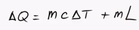
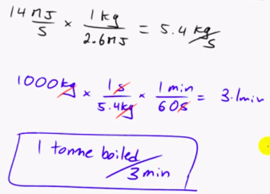

Index
- Section 0
- Section 1 - Nuclear Basics
- Lecture 1.0 - Learning outcomes and technical tour
- 1.1 Atoms and Nuclei
- 1.2 - Nuclear Structure & Nuclear Reactions
- 1.3 Isotopes and Radioactivity
- 1.4 Radiation and Interactions with MAtter
- Section 2 - Neutrons and Fission
3. Lecture 3
Rate of evaporation for cooling water following Fukushima disaster.• Heat continues to be generated by decay even after reactor has been "Switched Off"
• Water is added to the core to cool and prevent meltdown.
• Calculations for cooling water required:

L = (Latent Heat of Vaporisation)/kg ≈ 2600 kJ/kg
c = Specific Heat capacity (4.180 kJ/kg.K for water)
mL accounts for the energy required for the boiling off of the water
• Assuming water is added at 10degC, deltaT is 90. Dividing through by mass the specific heat required is 2.6MJ/kg (2.6MJ of heat is absorbed for every kg of water boiled off).
• This is a useful form as it allows to easily calculate water required. (Assuming 2.6MJ of energy is provided, 1kg of water will be boiled off every second)
• In April 2011 (shortly after Fukushima disaster), there was still ≈ 14MJ of heat being produced by the decay of radioactive waste.
• Approximate rate of water boiled off in Fukushima reactors:

• At Fukushima, salt water was used as coolant due to lack of availability of fresh water. At this rate of boiling, residual salt is left which could create further problems.